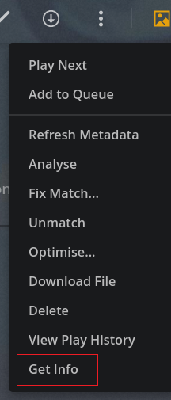
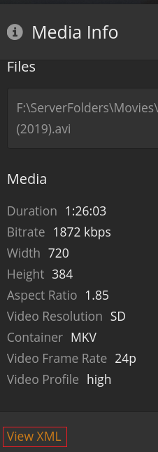
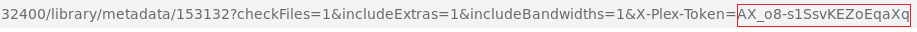

Plex¶
Tizonia can stream audio from a Plex server. To stream from a Plex server, it is necessary to provide the base URL where the server can be contacted and the authentication token. These two elements must be provided on the command-line or via configuration file.
CONFIGURATION¶
The Tizonia configuration file contains a block under the [tizonia] section
like the one pictured below (see also Configuration File).
Warning
When credentials are stored in your local
tizonia.conf, please ensure that this file has the correct
file system permissions to prevent other users from accessing your
credentials.
E.g.: $ chmod og-rwx $HOME/.config/tizonia/tizonia.conf
# Plex configuration
# -------------------------------------------------------------------------
# To avoid passing this information on the command line, uncomment and
# configure your Plex server and account auth token here.
#
# To find how to obtain a Plex user authentication token, see:
# https://support.plex.tv/articles/204059436-finding-an-authentication-token-x-plex-token/
#
# plex.base_url = xxxxxxxxxxxxxx (e.g. http://plexserver:32400)
# plex.auth_token = xxxxxxxxxxxxxx (e.g. SrPEojhap3H5Qj2DmjhX)
# plex.buffer_seconds = size of the audio buffer (in seconds) to use
# while downloading streams. Default: 600.
# Increase in case of cuts.
# plex.music_section_name = name of the music section in your plex library
# (default: Music)
plex.base_urlThe base URL of the Plex server, e.g. http://plexserver:32400.
plex.auth_tokenThe user authentication token to be used during communication with the Plex server. To find the token:
Sign in to your Plex account in the Plex Web App.
Browse to a library item and click on the Get Info menu item.
From the Media Info screen, click on View XML.
Look in the URL and find the token as the X-Plex-Token value

For more details see https://support.plex.tv/articles/204059436-finding-an-authentication-token-x-plex-token/
plex.buffer_secondsThis is the minimum size of the audio buffer (in seconds) that Tizonia will use while downloading the audio streams. It may be increased in case of cuts, but usually not required. Default: 60.
plex.music_section_nameThe name of the ‘music’ section in the Plex library that will be used by Tizonia for searching and streaming. Defaults: Music. Useful for users that have renamed their music library to something different from the default or users that have more than one music library.
OPTIONS¶
--plex-server-base-url argPlex server base URL (e.g. ‘http://plexserver:32400’. Not required if provided via config file).
--plex-auth-token argPlex account authentication token (not required if provided via config file).
--plex-music-section argName of the Plex music section (needed if different from ‘Music’; may be provided via config file).
--plex-audio-tracks argSearch and play audio tracks from a Plex server.
--plex-audio-artist argSearch and play an artist’s audio tracks from a Plex server.
--plex-audio-album argSearch and play a music album from a Plex server.
--plex-audio-playlist argSearch and play playlists from a Plex server.
EXAMPLES¶
$ tizonia --plex-audio-artist 'Santana'
$ tizonia --plex-audio-track 'five miles out'
$ tizonia --plex-audio-album "Draconian Times"
$ tizonia --plex-audio-playlist "Mike oldfield popular tracks"